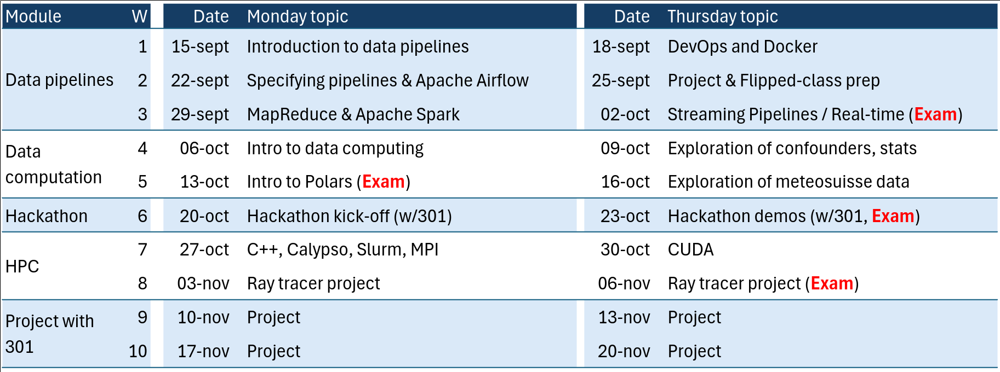

name: title layout: true class: cover --- count: false .section-mark.center[ <a href="https://oesteban.github.io/isc-hei-302/week1/day0/index.html"> <object type="image/svg+xml" data="images/qr-talk-url.svg" style="width: 20%"></object> <br /> https://oesteban.github.io/isc-hei-302/week1/day0/index.html </a> <br /> <br /> ## Data computing—module overview Oscar Esteban <<code>oscar.esteban@hevs.ch</code>> <br /> ### 302 Data computation (week 1, day 1) — 15.09.2025 ] ??? --- name: newsection layout: true include_org: true .perma-sidebar[ <p class="rotate"> <a rel="license" href="http://creativecommons.org/licenses/by/4.0/"><img alt="Creative Commons License" style="border-width:0; height: 20px; padding-top: 6px;" src="https://i.creativecommons.org/l/by/4.0/88x31.png" /></a> <span style="padding-left: 10px; font-weight: 600;">Data computing—module overview (15.09.2025)</span> </p> ] --- class: roulette time: 45 .section-mark[ # Present yourself .large[ .gray-text[Share:] Expectations for this course, <br /> whether you have some experience on the topics, <br /> whether you want to be surprised, etc.] ] --- # 302 Program .boxed-content[ <p></p> ] --- .section-mark[ # These slides <a href="https://github.com/oesteban/isc-hei-302"> <object type="image/svg+xml" data="images/qr-slides-url.svg" style="width: 20%"></object> <br /> https://github.com/oesteban/isc-hei-302 </a> ] --- .section-mark[ # End .large[ <i class="fa-solid fa-circle-left" style="opacity: 20%"></i> [<i class="fa-solid fa-home"></i>](#1) [<i class="fa-solid fa-circle-right"></i>](../../week1/day1/index.html) ] ]